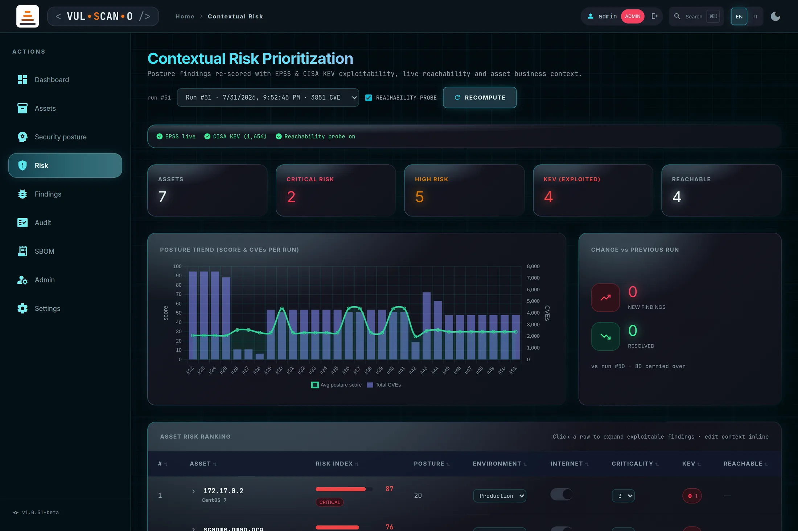
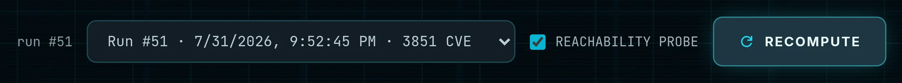
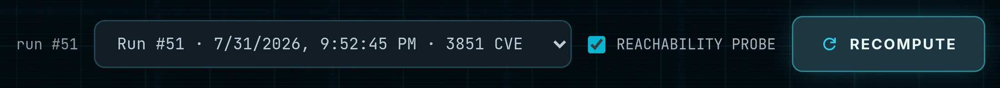
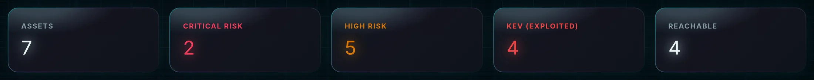
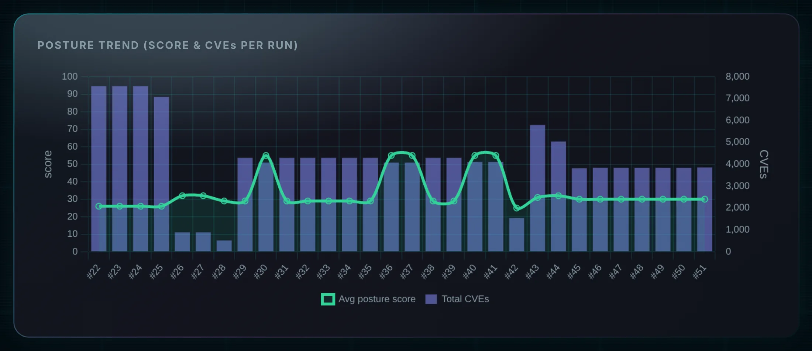
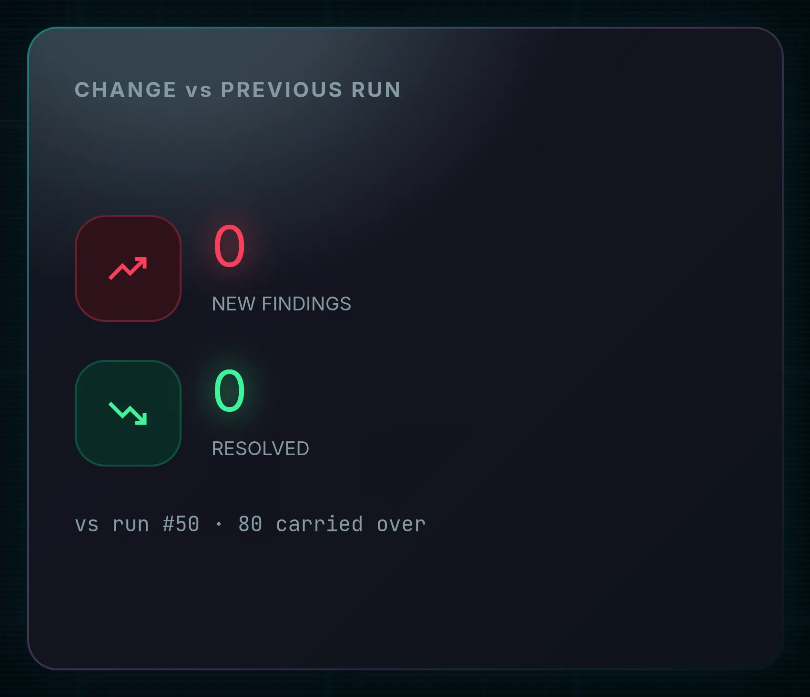
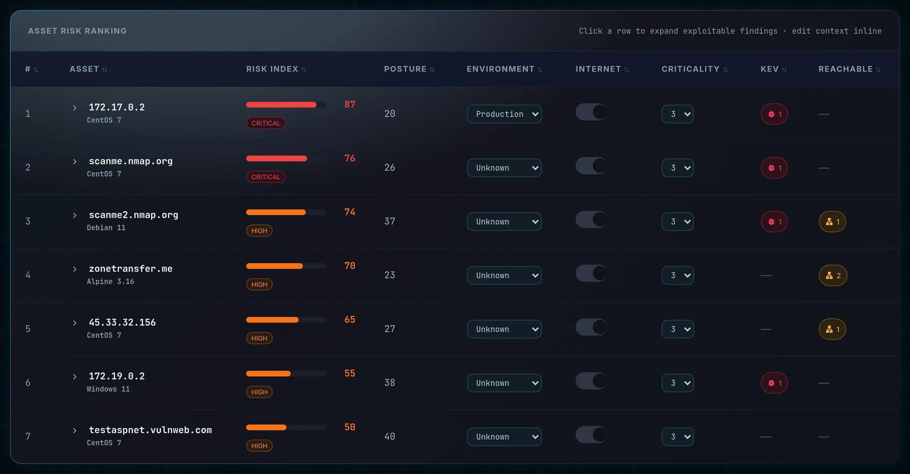
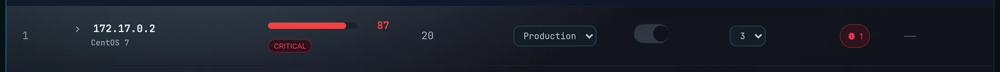
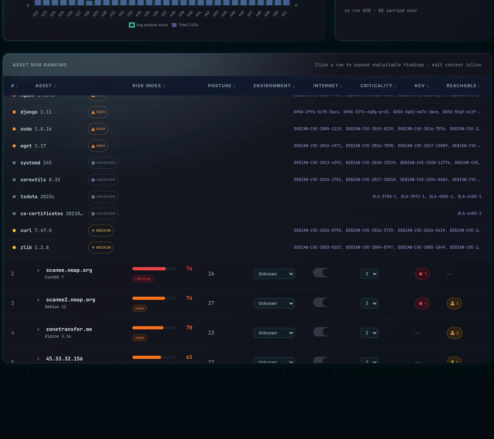

Contextual Risk PrioritizationPrioritizzazione contestuale del rischio
Severity alone is a poor patch order. A critical on an isolated development box matters less than a high that is being actively exploited in the wild on an internet-facing production host. This page re-scores the latest posture run with four extra dimensions and ranks your assets accordingly.
La sola severità è un pessimo criterio di priorità. Un critical su una macchina di sviluppo isolata conta meno di un high sfruttato attivamente in the wild su un host di produzione esposto a internet. Questa pagina ricalcola l'ultima run di postura con quattro dimensioni aggiuntive e ordina gli asset di conseguenza.
Page OverviewPanoramica read: all · context edit: admin, manager, editorlettura: tutti · modifica contesto: admin, manager, editor
The page subtitle summarises it: “Posture findings re-scored with EPSS & CISA KEV exploitability, live
reachability and asset business context.” Data comes from GET /api/risk (the scoring) and
GET /api/risk/trend (the history and the run-to-run delta).
Il sottotitolo della pagina lo riassume: «Posture findings re-scored with EPSS & CISA KEV
exploitability, live reachability and asset business context.» I dati arrivano da
GET /api/risk (il calcolo) e GET /api/risk/trend (lo storico e il delta fra run).
For an editor the whole computation is recomputed on the visibility cone, not filtered afterwards: their score describes their assets and reveals nothing about the rest of the fleet. In the trend series the per-run global counters are omitted for the same reason.
Per un editor l'intero calcolo è rifatto sul cono di visibilità, non filtrato a posteriori: il suo score descrive i suoi asset e non rivela nulla del resto del parco. Nella serie storica i contatori globali per run vengono omessi per lo stesso motivo.

The four factorsI quattro fattori
| DimensionDimensione | SourceFonte | Effect on the scoreEffetto sullo score |
|---|---|---|
| Exploitation in the wildSfruttamento in the wild | CISA KEV catalogue, cached about six hours.Catalogo CISA KEV, in cache circa sei ore. | A strong multiplier (+1.5 on the exploit factor). A CVE in KEV is confirmed to be exploited right now — this is the single most important signal on the page.Un moltiplicatore forte (+1,5 sul fattore exploit). Un CVE nel KEV è confermato come sfruttato adesso — è il segnale più importante della pagina. |
| Exploitation probabilityProbabilità di sfruttamento | EPSS from FIRST.org — a probability between 0 and 1 that the CVE is exploited within 30 days.EPSS da FIRST.org — una probabilità fra 0 e 1 che il CVE venga sfruttato entro 30 giorni. | Added proportionally. Only CVE identifiers are sent to FIRST — nothing about your assets leaves your infrastructure.Aggiunta proporzionalmente. A FIRST vengono inviati solo identificativi CVE — nulla dei tuoi asset lascia la tua infrastruttura. |
| ReachabilityRaggiungibilità | A live TCP probe of the service ports associated with the vulnerable package.Una sonda TCP live sulle porte di servizio associate al pacchetto vulnerabile. | ×1.4 when a matching port actually answers — a vulnerability nobody can reach is a different problem from one exposed on the network.×1,4 quando una porta corrispondente risponde davvero — una vulnerabilità irraggiungibile è un problema diverso da una esposta in rete. |
| Business contextContesto di business | Your own inventory metadata: environment, internet-facing flag, criticality 1–5.I metadati del tuo inventario: ambiente, flag di esposizione a internet, criticità 1–5. | Scales the whole asset score as a multiplier. This is the part only you can supply — and the part that makes the ranking yours rather than generic.Scala l'intero score dell'asset come moltiplicatore. È la parte che solo tu puoi fornire — e quella che rende la classifica tua e non generica. |
The exact arithmetic, including the saturation curve, is documented in Appendix C.
L'aritmetica esatta, inclusa la curva di saturazione, è documentata in Appendice C.
Controls and source indicatorsControlli e indicatori delle fonti

| ControlControllo | BehaviourComportamento |
|---|---|
| REACHABILITY PROBE |
On by default. When enabled, the server opens short TCP connections to the service ports associated with each vulnerable package (probe=true). Switch it off for a faster, entirely passive computation — the reachability multiplier is then dropped rather than guessed.
Attiva di default. Quando è abilitata, il server apre brevi connessioni TCP verso le porte di servizio associate a ciascun pacchetto vulnerabile (probe=true). Disattivala per un calcolo più rapido e del tutto passivo — il moltiplicatore di raggiungibilità viene allora escluso, non ipotizzato.
|
| RECOMPUTE |
Re-runs GET /api/risk with the current probe setting and freshly fetched EPSS and KEV data. Press it after editing business context — the table does not silently re-rank behind your back.
Riesegue GET /api/risk con l'impostazione corrente della sonda e con dati EPSS e KEV appena scaricati. Premilo dopo aver modificato il contesto di business — la tabella non si riordina silenziosamente alle tue spalle.
|
| Run selectorSelettore di run |
Choose which stored posture run to score: Run #id · timestamp · n CVE. Scoring an older run is how you reconstruct “what did we know last month?”.
Scegli quale run di postura salvata valutare: Run #id · timestamp · n CVE. Valutare una run precedente è il modo per ricostruire «cosa sapevamo il mese scorso?».
|
| Source indicatorsIndicatori delle fonti | EPSS live / EPSS offline and Reachability probe on / Reachability probe off. They tell you which factors actually contributed, so a degraded score is never silent — this is the honesty feature of the page. EPSS live / EPSS offline e Reachability probe on / Reachability probe off. Indicano quali fattori hanno effettivamente contribuito, così uno score degradato non è mai silenzioso — è la funzione di onestà della pagina. |
| Loading stateStato di caricamento | “Computing risk — EPSS / KEV / reachability lookup…” while the external feeds are fetched.«Computing risk — EPSS / KEV / reachability lookup…» durante il recupero dei feed esterni. |

KPI stripStriscia KPI

| KPI | MeaningSignificato |
|---|---|
| ASSETS | Assets scored in this run, inside your cone.Asset valutati in questa run, dentro il tuo cono. |
| CRITICAL RISK | Assets with a risk index of 75 or above.Asset con indice di rischio pari o superiore a 75. |
| HIGH RISK | Assets with a risk index between 45 and 74.Asset con indice di rischio fra 45 e 74. |
| KEV (EXPLOITED) | Findings whose CVE appears in the CISA KEV catalogue. Treat this as your emergency queue — it is the only KPI here that describes confirmed real-world attacks rather than potential.Finding il cui CVE compare nel catalogo CISA KEV. Consideralo la tua coda di emergenza — è l'unico KPI qui che descrive attacchi reali confermati e non potenziali. |
| REACHABLE | Findings whose service port answered the probe.Finding la cui porta di servizio ha risposto alla sonda. |
Trend and run-to-run deltaTendenza e delta fra run


| ElementElemento | BehaviourComportamento |
|---|---|
| POSTURE TREND | A dual-series history — score and CVE count — across stored runs, from GET /api/risk/trend. For editors the per-run global counters are omitted; only the run identifiers and dates remain, with the cone's own series.Uno storico a doppia serie — score e numero di CVE — sulle run salvate, da GET /api/risk/trend. Per gli editor i contatori globali per run vengono omessi; restano solo identificativi e date delle run, con la serie del proprio cono. |
| NEW FINDINGS | Findings present in the latest run and absent from the previous one — what got worse.Finding presenti nell'ultima run e assenti nella precedente — cosa è peggiorato. |
| RESOLVED | Findings that disappeared — what your remediation actually achieved.Finding scomparsi — ciò che la tua remediation ha effettivamente ottenuto. |
| Carried overRiportati | Findings present in both runs — the backlog.Finding presenti in entrambe le run — l'arretrato. |
| First runPrima run | “First run — no previous baseline.”«First run — no previous baseline.» |
ASSET RISK RANKING

Features BreakdownDettaglio funzionalità
| ColumnColonna | ContentContenuto | InteractionInterazione |
|---|---|---|
| # | Rank, highest risk first.Posizione, dal rischio più alto. | — |
| ASSET | IP or hostname with the detected operating system underneath.IP o hostname con sotto il sistema operativo rilevato. | Click the row (or the chevron) to expand its exploitable findings.Clicca la riga (o il chevron) per espandere i finding sfruttabili. |
| RISK INDEX | A 0–100 contextual score with a coloured bar and a bucket badge — CRITICAL at 75+, HIGH at 45–74.Uno score contestuale 0–100 con barra colorata e badge di fascia — CRITICAL da 75, HIGH fra 45 e 74. | Hover for the full factor breakdown: “Risk 87/100 · posture 20 · KEV 1 · reachable 0 · internal · criticality 3”. This tooltip is what lets you justify a position to an auditor.Passa il mouse per la scomposizione completa dei fattori: «Risk 87/100 · posture 20 · KEV 1 · reachable 0 · internal · criticality 3». È questo tooltip a permetterti di giustificare una posizione davanti a un auditor. |
| POSTURE | The raw SCA score for the same asset.Lo score SCA grezzo dello stesso asset. | The gap between RISK INDEX and POSTURE is exactly what context and exploitability add. A host at posture 20 and risk 87 is being pushed up by KEV, exposure or criticality.Il divario fra RISK INDEX e POSTURE è esattamente ciò che aggiungono contesto ed exploitability. Un host con postura 20 e rischio 87 è spinto in alto da KEV, esposizione o criticità. |
| ENVIRONMENT | Dropdown: Unknown · Production · Staging · Dev.Menu a tendina: Unknown · Production · Staging · Dev. | Inline edit → PATCH /api/assets/{id}/context, saved immediately. Disabled for the read-only roles (auditor, viewer, stakeholder) and for rows with no matching inventory asset.Modifica in linea → PATCH /api/assets/{id}/context, salvata subito. Disabilitata per i ruoli di sola lettura (auditor, viewer, stakeholder) e per le righe senza un asset corrispondente in inventario. |
| INTERNET | A toggle marking the asset as internet-facing.Un interruttore che marca l'asset come esposto a internet. | Inline; strongly amplifies the score, because exposure changes who can reach the vulnerability.In linea; amplifica sensibilmente lo score, perché l'esposizione cambia chi può raggiungere la vulnerabilità. |
| CRITICALITY | Business criticality from 1 to 5.Criticità di business da 1 a 5. | Inline dropdown. 5 means the asset the business genuinely cannot lose; keep that meaning strict or the scale stops discriminating.Menu in linea. 5 significa l'asset che l'azienda davvero non può perdere; mantieni rigoroso quel significato o la scala smette di discriminare. |
| KEV | Count of findings on this asset whose CVE is in the KEV catalogue, as a red badge.Numero di finding su questo asset il cui CVE è nel catalogo KEV, come badge rosso. | Any non-zero value outranks a higher index elsewhere.Qualsiasi valore diverso da zero ha priorità su un indice più alto altrove. |
| REACHABLE | Count of findings whose port answered the probe, as an amber badge.Numero di finding la cui porta ha risposto alla sonda, come badge ambra. | — |
Every column header is sortable — by click, or with Enter/Space
when focused, since the headers are exposed as buttons with tabindex. The panel header states the
two interactions plainly: “Click a row to expand exploitable findings · edit context inline.”
Ogni intestazione di colonna è ordinabile — con un clic, o con Invio/Spazio
quando ha il focus, poiché le intestazioni sono esposte come pulsanti con tabindex. L'intestazione
del pannello dichiara chiaramente le due interazioni: «Click a row to expand exploitable findings · edit
context inline.»


Expanding a row lists its findings ordered by individual risk, each showing the package and version, the severity, the CVE identifiers, the KEV flag, the EPSS value and the matched open ports. That is the drill-down that turns a ranking into a work list.
Espandendo una riga si ottiene l'elenco dei suoi finding ordinati per rischio individuale, ciascuno con pacchetto e versione, severità, identificativi CVE, flag KEV, valore EPSS e le porte aperte corrispondenti. È il drill-down che trasforma una classifica in una lista di lavoro.
| StateStato | MessageMessaggio |
|---|---|
| No posture dataNessun dato di postura | “No posture data yet. Run a posture scan first.” |
| Asset with no vulnerable findingsAsset senza finding vulnerabili | “No vulnerable findings.” |
| Database unreachableDatabase irraggiungibile | The endpoint answers 503 and the page reports Supabase as unreachable.L'endpoint risponde 503 e la pagina segnala Supabase come irraggiungibile. |
Procedures and expected outcomesProcedure e risultati attesi
How It WorksCome funziona
- Run a posture scan first — this page has nothing to score without one.Esegui prima una scansione di postura — senza, questa pagina non ha nulla da valutare.
- Open Risk and wait for the external feeds; the loading line tells you what it is fetching.Apri Risk e attendi i feed esterni; la riga di caricamento indica cosa sta scaricando.
- Check the source indicators. If they read EPSS offline, the ranking is still valid but less precise.Controlla gli indicatori delle fonti. Se riportano EPSS offline, la classifica resta valida ma meno precisa.
- Read the ranking top-down. Anything with KEV > 0 jumps the queue regardless of its index.Leggi la classifica dall'alto. Tutto ciò che ha KEV > 0 salta la fila a prescindere dall'indice.
- Set the business context for your top assets: ENVIRONMENT, INTERNET, CRITICALITY. Each edit saves immediately.Imposta il contesto di business per gli asset in cima: ENVIRONMENT, INTERNET, CRITICALITY. Ogni modifica viene salvata subito.
- Press RECOMPUTE — the ranking reorders around your real-world context.Premi RECOMPUTE — la classifica si riordina attorno al tuo contesto reale.
- Expand the top rows and note the packages driving the score; resolve their fix versions in /intel.Espandi le righe in cima e annota i pacchetti che spingono lo score; risolvi le versioni di fix in /intel.
- After patching, re-run posture and check CHANGE vs PREVIOUS RUN for the RESOLVED count.Dopo le patch, riesegui la postura e controlla CHANGE vs PREVIOUS RUN per il numero di RESOLVED.
Expected OutcomeRisultato atteso
A ranked, defensible patch order. Assets combining KEV entries, open ports and production or internet-facing context rise to the top even when their raw posture score is mid-range; isolated development boxes sink even with alarming severities.
Degraded mode: if EPSS or KEV cannot be reached the page still renders — the indicators flip to EPSS offline and the missing factor is treated as neutral, never as zero risk.
Un ordine di patch classificato e difendibile. Gli asset che combinano voci KEV, porte aperte e contesto di produzione o esposizione a internet salgono in cima anche con uno score di postura medio; le macchine di sviluppo isolate scendono anche con severità allarmanti.
Modalità degradata: se EPSS o KEV non sono raggiungibili la pagina si mostra comunque — gli indicatori passano a EPSS offline e il fattore mancante è trattato come neutro, mai come rischio zero.